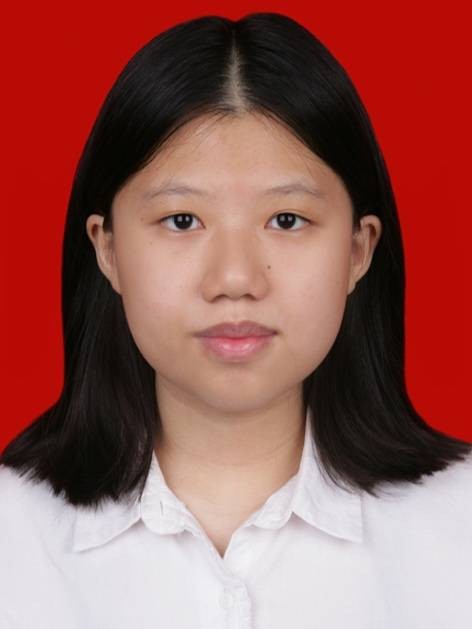

Natalia Desiany Nursimin
Saya adalah seorang mahasiswi Teknik Informatika di Institut Teknologi Bandung yang senang mempelajari hal-hal baru. Saya merupakan seorang individu yang selalu berusaha untuk mencari pengalaman-pengalaman baru untuk dapat meningkatkan pengetahuan saya, memperluas relasi dan menjalin pertemanan baru, serta memperbaiki diri saya agar dapat menjadi versi diri saya yang lebih baik kedepannya.
Sebagai mahasiswi Teknik Informatika di Institut Teknologi Bandung, saya memiliki minat yang tinggi dalam mengeksplorasi dan mempelajari berbagai aspek pengembangan perangkat lunak, serta teknologi dan pengembangan terbaru di bidang informatika. Saya memiliki ketertarikan mendalam untuk terus mencari pengalaman baru yang dapat memperluas wawasan dan melatih skill saya dalam coding. Selain itu, saya memiliki bakat dalam mempelajari hal-hal baru dengan cepat yang didukung oleh kepribadian saya yang selalu ingin tahu dan suka menjelajahi inovasi terbaru, khususnya dalam dunia pemrograman.
Beberapa proyek yang telah saya kerjakan meliputi tugas besar 1 dan 2 dalam mata kuliah Pengenalan Komputasi, serta tugas besar 1 dan 2 dalam mata kuliah Dasar Pemrograman. Dalam setiap proyek ini, saya berhasil menyelesaikannya secara tepat waktu, efisien, dan dengan hasil yang memuaskan, yang menjadi pencapaian penting dalam perjalanan akademis saya.
Kontak Diri
Nomor Telepon: 085810800178
Email: nataliadesianyy@gmail.com